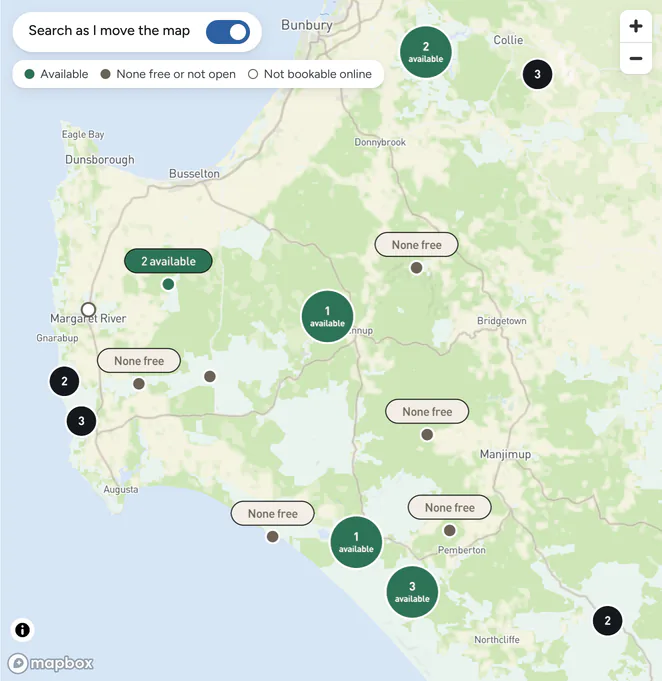
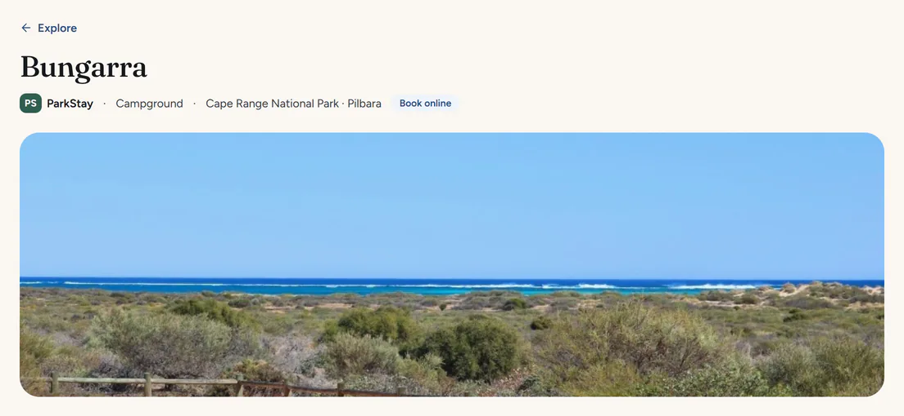
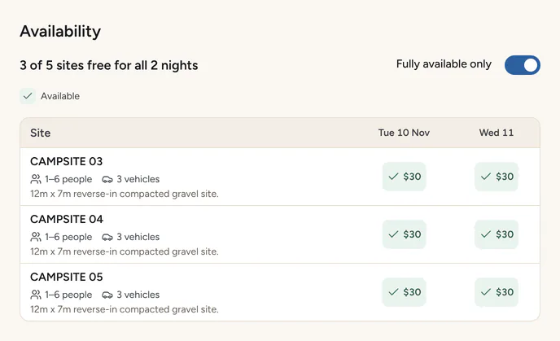
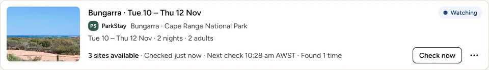
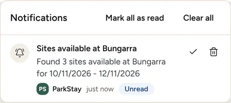

Find a place to stay in WA
See what’s free on your dates, all on one map, whichever booking system it’s on. If it’s booked out, WA Stay keeps checking and lets you know if something frees up.
Free for Windows 10 and 11

See what’s free before you plan the drive
Pick your nights and who’s coming. Every place you can book online shows what’s free for your whole stay, whichever provider runs it, so you can weigh up Conto against Boranup without clicking through each one.
Narrow it down by provider, by the kind of stay (camping, cabins, rooms and more), by region, or by facilities such as toilets or dogs permitted.

Every site, night by night
Open a place to see each site or cabin on each night of your stay, with its price, who it suits and what it’s like.
The provider’s own notes, such as closures and rules, are there too, and a link takes you to its site when you’re ready to book.


Booked out? Set a watch
Tell WA Stay where you’d like to stay and when. It checks as often as every 15 minutes and lets you know if something frees up, with a desktop notification or an email from your own email account. Click the alert and the provider’s booking page opens for those dates; the link in the email works from your phone too.
Where the provider allows it, WA Stay can hold the place as soon as it finds one, so you have time to pay on the provider’s own site.


“I missed out on an Exmouth booking during school holidays so used the app to watch for a cancellation and it worked!”
Different providers, one app
WA’s places to stay are spread across different booking systems. WA Stay puts them in one search and on one map, shows whose each place is, and sends you to the provider’s own site to book.
-
ParkStay WA
Campgrounds in WA’s national parks and other parks, booked through DBCA.
- Free sites on the map
- Watches
- Holds while you pay
-
RAC Parks & Resorts
Holiday parks and resorts around WA, from Esperance to Broome, booked through RAC.
- Free sites and cabins on the map
- Watches
- RAC member rates
-
More on the way
New providers arrive with app updates, and show up on the same map.
Coming next
-
Site Sniper Soon
Popular sites go fast when bookings open. Site Sniper will be ready at the release time, wait in the provider’s queue where it can, and alert you the moment your dates are free or, where the provider allows it, try to hold a site for you to pay for. Where a provider’s terms rule out checking on its booking day, it will remind you before bookings open instead, with what to have ready. Where members can book early, add your member number and it will be ready for the members’ release.
-
Bookings Soon
Trips you pay for through WA Stay, or add yourself, in one list whatever the provider, each with a link to change or cancel it on the provider’s own site.
Questions
Does it cost anything?
No. WA Stay is free and open source, with no ads, subscription or in-app purchases. You pay for your stay to the provider, as you would on its own website.
Does WA Stay book places for me?
No. It finds places, and a watch can hold one for you, but you finish the booking on the provider’s own pages. Card details go into the provider’s payment page; WA Stay doesn’t read or keep them.
Do I need an account?
There’s no WA Stay account to make. A provider may ask you to sign in when you pay, as it does on its own website, and signing in from WA Stay’s settings beforehand makes paying quicker. Where a provider has member rates, you can add your member number in WA Stay’s settings to see them. It’s kept encrypted on your computer, and WA Stay never sends it: you type it in at the provider’s checkout, and WA Stay can copy it for you.
Will it hold more than one place for the same night?
Not with the same provider. WA Stay holds at most one place per night with each provider, across all your watches, so you never take more than you’ll use.
Does it keep checking when my computer is off?
No. WA Stay checks your watches while it’s open and your computer is awake. In its settings you can have it start when you sign in to Windows, minimised to the taskbar.
Windows says it protected my PC. Is that OK?
WA Stay isn’t code-signed yet, so Windows SmartScreen may warn you the first time you run the installer. Choose “More info”, then “Run anyway”.
Is there a Mac version?
No. WA Stay is for Windows 10 and 11 (64-bit).
Where does my information go?
Your watches, settings and email details stay on your computer. Any member number you add is kept encrypted on your computer, and WA Stay never sends it. WA Stay talks to the providers, and the sites that host their photos, for places, photos and availability, to Mapbox for the map (which also sends Mapbox its standard usage data), to GitHub to check for updates, and to your email provider if you turn on email alerts. WA Stay itself has no analytics.
Is WA Stay run by the providers?
No. WA Stay is an independent app that works with the providers’ public booking systems. It isn’t made by or affiliated with any of them.
I use WA ParkStay Bookings. What happens to it?
WA Stay is its new name. Your copy will offer the update, and your watches, notifications and settings come with you.
Download WA Stay
Free for Windows 10 and 11. The first time you run the installer, Windows may ask you to confirm it: choose “More info”, then “Run anyway”.
Download for Windows